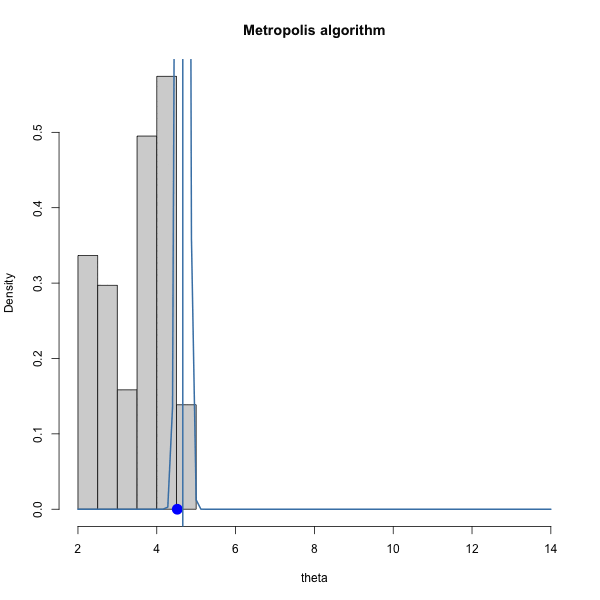
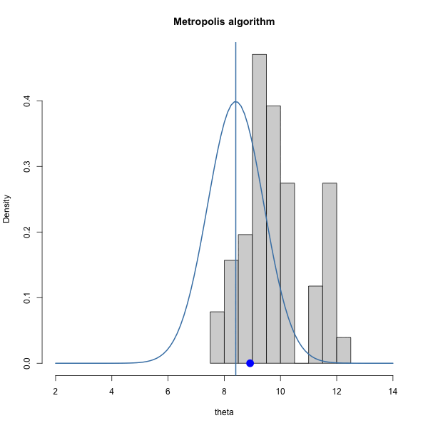
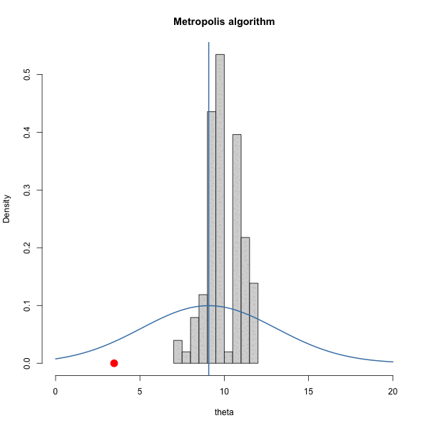
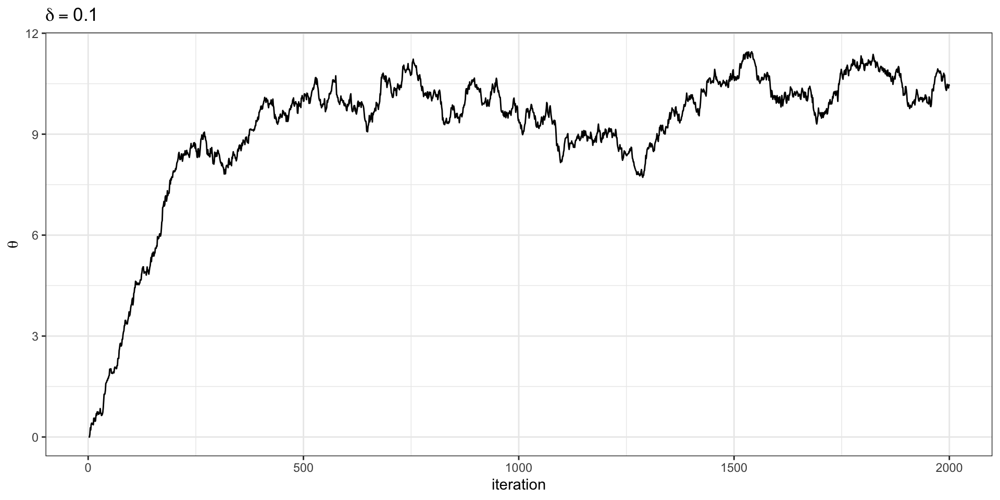
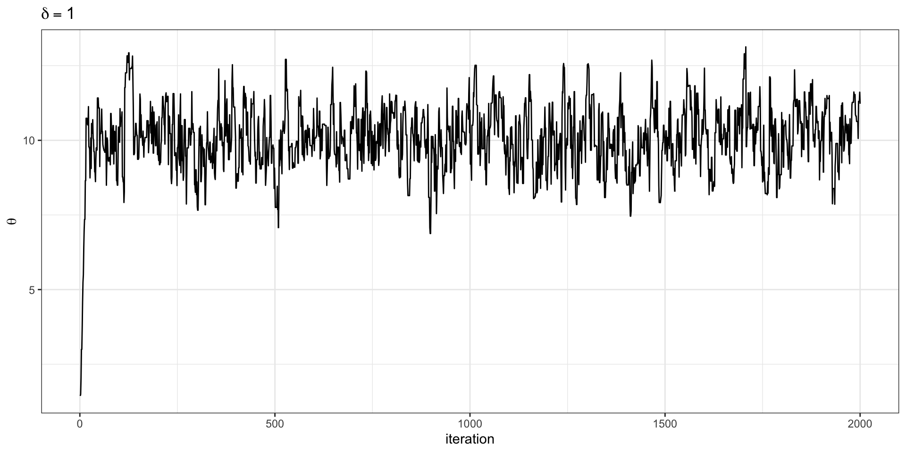
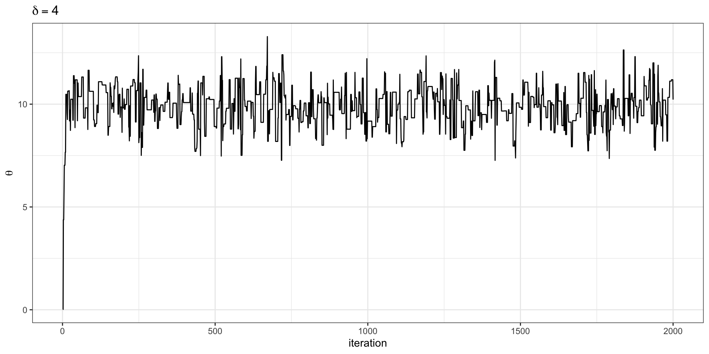

[1] 4.032915e+26Markov chain Monte Carlo
Dr. Alexander Fisher
Duke University
Today
By the end, you should be able to:
- Explain why we might use a Markov chain for Monte Carlo simulation.
- Describe the Metropolis algorithm in words and code.
- Explain the roles of irreducibility, aperiodicity, and stationarity.
- Use traceplots and acceptance rates to recognize obvious problems.
- Explain burn-in and why starting values can matter.
- Describe how MCMC can be used to break a substitution cipher.
Motivation

Basic cryptology terminology
- cryptography: making secret messages (encryption)
- substitution
- transposition
- cryptanalysis: breaking secret messages (decryption)
- cryptology: the study of cryptography and cryptanalysis
- plain text: the actual message
- cipher text: the encrypted message
- key: information to encode (or decode) cryptographic key
- symmetric (same key for encryption and decryption)
- asymmetric (different key to encrypt and decrypt)
Substitution cipher
- Idea: each character of plaintext is substituted with another character
Brute force approach?
- Trying every possible key is known as a “brute force” approach.
Since every key is a permutation of the alphabet, there are
\[ 26! \]
possible keys.
If you’re computer could “try” 1 million keys per second, it would still take 4.6677252^{15} years to try every possible key and guarantee a solution.
- Chat with your neighbor and develop a strategy better than the brute force approach.
Some keys are much better than others
Suppose one candidate key produces
and another produces
The first looks much more like English.
We can create a numerical score:
\[ S(\text{key}) = \text{how English-like is the decoded text?} \]
Higher score = more plausible key.
Instead of searching every key
We could:
- Start with one candidate key.
- Make a small random change.
- Decode the message.
- Compare the new score with the current score.
- Decide whether to move to the new key.
- Repeat.
This creates a sequence of candidate keys.
If the moves in “key space” are only based on the current position, the sequence will be a Markov chain.
Recall: the Markov property
A Markov chain is a sequence
\[ X_1, X_2, X_3, \ldots \]
where the next state depends on the current state:
\[ P(X_{t+1}\mid X_t,X_{t-1},\ldots) = P(X_{t+1}\mid X_t). \]
For cryptanalysis,
\[ X_t = \text{candidate key at iteration } t. \]
Recall: stationary distributions
For a long Markov chain, the fraction of time spent in state \(j\) can estimate its stationary probability:
\[ \widehat{\pi}_j = \frac{\text{number of visits to state }j} {\text{number of iterations}}. \]
This suggests a powerful idea:
What if we construct a chain whose stationary distribution favors the states we want to find?
Markov chain Monte Carlo
Markov chain Monte Carlo (MCMC) means:
Construct a Markov chain whose long-run distribution is a distribution we want to explore.
Then use the states visited by the chain as simulated draws.
For cryptanalysis, we want:
- high-scoring keys visited often,
- low-scoring keys visited rarely.
A target distribution
Suppose every possible state \(x\) has a nonnegative score
\[ f(x). \]
We want stationary probabilities proportional to those scores:
\[ \pi(x) \propto f(x). \]
The symbol \(\propto\) means proportional to.
We do not need to know the constant that makes all the probabilities sum to 1.
Why proportional is enough
Suppose
\[ \pi(x) = \frac{f(x)}{C} \]
for some unknown constant \(C\).
Then
\[ \frac{\pi(x^\star)}{\pi(x)} = \frac{f(x^\star)}{f(x)}. \]
The unknown constant cancels.
That is one reason MCMC is useful when a target is easy to score but hard to sample from directly.
One Metropolis step
Suppose the chain is currently at \(x\).
- Propose a nearby state \(x^\star\).
- Calculate
\[ r = \frac{f(x^\star)}{f(x)}. \]
- Accept the proposal with probability
\[ \min(1,r). \]
Otherwise, remain at \(x\).
Why accept worse proposals?
If \(f(x^\star) > f(x)\), then \(r>1\), so the proposal is always accepted.
If \(f(x^\star) < f(x)\), it can still be accepted.
For example, if
\[ r=0.8, \]
we accept the worse proposal with probability \(0.8\).
If we accepted only improvements, we could become trapped at a local optimum.
The Metropolis algorithm in R
After a rejection, current does not change.
A note on numerical stability
Practically, we want to avoid computing
ratio <- target_score(proposal) /
target_score(current)directly, because it could be numerically unstable for very small/large target_score(). To make things more stable, we always log the ratio and modify the code as such:
Toy example
A simple target
Before returning to cryptanalysis, consider
\[ f(x) = \exp\left[ -\frac{1}{2} \left({x-10}\right)^2 \right]. \]
The target is largest near \(x=10\).
Propose a nearby state
Use a random step around the current position:
\[ X^\star \sim N(X_t,\sigma^2). \]
This is a random-walk proposal.
A complete Metropolis function
log_target_score <- function(x) {
-0.5 * (x - 10)^2
}
metropolis <- function(n_steps = 5000,
start = 0,
proposal_sd = 1) {
x <- numeric(n_steps) # something to save state of chain
accepted <- logical(n_steps) # something to save whether accepted or not
x[1] <- start # starting position of chain
for (t in 2:n_steps) {
proposal <- rnorm(1, x[t - 1], proposal_sd)
log_ratio <- log_target_score(proposal) -
log_target_score(x[t - 1])
if (log(runif(1)) < log_ratio) {
x[t] <- proposal
accepted[t] <- TRUE
} else {
x[t] <- x[t - 1]
}
}
tibble(iteration = 1:n_steps, x, accepted)
}Run the chain
# A tibble: 5,000 × 3
iteration x accepted
<int> <dbl> <lgl>
1 1 -3 FALSE
2 2 -3 FALSE
3 3 -3 FALSE
4 4 -2.78 TRUE
5 5 -2.56 TRUE
6 6 -2.42 TRUE
7 7 -2.33 TRUE
8 8 -1.94 TRUE
9 9 -1.94 FALSE
10 10 -1.80 TRUE
# ℹ 4,990 more rowsThese simulations are dependent.
Each state was generated using the previous state.
The hope is that their long-run distribution is still the target distribution.
Do we reach the target?
The histogram should approximately follow the target shape.
Acceptance rate
The acceptance rate is the fraction of proposed moves that were accepted.
Very low acceptance can mean the chain is repeatedly proposing moves that are too large.
Very high acceptance can occur when proposed moves are so small that the chain moves only very slowly.
Different proposal standard deviation



Trace plots
Let’s look at the trace plots for each \(\delta\). A traceplot shows the state of the chain against iteration.



| 0.1 | 1 | 4 |
|---|---|---|
| 0.96 | 0.7 | 0.29 |
Want: traceplots to look like fuzzy caterpillars.
Intuition: blind monkey on an island
MCMC Vocab
Will we reach stationarity?
For the Markov chains we consider, irreducibility, positive recurrence, and aperiodicity guarantee a unique stationary distribution and convergence to it in infinite time.
Recall:
irreducible: every state can eventually be reached from every other state
positive recurrence: starting from any state, the chain returns to that state eventually with probability 1.
New:
- aperiodic: the chain is not forced to revisit states only at regularly spaced times.
Why Metropolis often gives aperiodicity
When a Metropolis proposal is rejected,
\[ X_{t+1}=X_t. \]
The chain can remain in the same state.
For an irreducible chain, the ability to stay put is a simple way to obtain aperiodicity.
Starting values and burn-in
Our chain started far from the center of the target.
Early iterations can therefore reflect the arbitrary starting value.
A common strategy is to discard an initial portion:
This discarded portion is called burn-in or warm-up.
There is no universal correct number of iterations to discard.
Practically, we might examine the traceplot to visually inspect when we plausibly reach stationarity.
Mixing
A chain mixes well when it moves efficiently through the important parts of the target distribution.
Warning signs of poor mixing include:
- long flat stretches,
- very slow wandering,
- important regions visited only rarely.
No single plot or statistic proves that a chain has mixed well.
Multiple starting values
Run several chains from very different places:
If all chains eventually explore the same region, that is reassuring.
Return to cryptanalysis example
Cryptanalysis: the state and proposal
For the substitution cipher,
\[ X_t = \text{current substitution key}. \]
A simple proposal is:
Pick two letters at random and swap their assignments.
Any permutation can be transformed into any other permutation through a sequence of swaps.
So this proposal can, in principle, reach every possible key.
That gives us irreducibility.
Score the decoded message
We need a score that rewards English-looking text.
One approach uses frequencies of neighboring letters.
Common patterns such as
receive higher scores than unusual patterns such as
Combine these contributions across the decoded message to obtain an English log-score.
Cryptanalysis pseudocode
current_key <- initial_key
current_score <- score(decode(ciphertext, current_key))
for (t in 2:n_steps) {
proposed_key <- swap_two_letters(current_key)
proposed_score <-
score(decode(ciphertext, proposed_key))
accept_prob <- min(
1,
exp(proposed_score - current_score)
)
if (runif(1) < accept_prob) {
current_key <- proposed_key
current_score <- proposed_score
}
chain[[t]] <- current_key
scores[t] <- current_score
}Try it yourself
What should we plot?
The state is a 26-letter permutation, so a direct traceplot of the state is not useful.
Instead, plot the English score:
We want to see the chain reach and continue exploring high-scoring keys.
Diagnostics for the cipher chain
Useful checks include:
- Traceplot: does the English score settle into a high-scoring region?
- Acceptance rate: are nearly all swaps rejected?
- Multiple starts: do different random keys find similar decryptions?
- Best decoded text: does it actually look like English?
- Longer run: does running longer materially change the result?
For cryptanalysis, the decoded text itself is an unusually useful diagnostic.
Burn-in for the cipher
A random starting key usually decodes to nonsense.
The beginning of the chain mostly describes its trip away from that arbitrary starting key.
We may discard an initial section:
The traceplot should help us judge whether the early behavior looks different from the later behavior.
MCMC or optimization?
For cryptanalysis, we may care most about the best key found:
So this application has an optimization flavor.
But MCMC’s defining goal is broader:
Construct a chain with a chosen stationary distribution and use its visited states for Monte Carlo calculations.
Why this is Monte Carlo
Once the chain is exploring its stationary distribution, we can estimate an average under the target using
\[ \frac{1}{N} \sum_{t=1}^N h(X_t). \]
This looks like ordinary Monte Carlo.
The key difference is:
The simulated values are dependent because they come from a Markov chain.
Hence: “Markov chain Monte Carlo”
References
- Diaconis, P. (2009). “The Markov chain Monte Carlo revolution.” Bulletin of the American Mathematical Society, 46(2), 179–205.
- Metropolis, N., Rosenbluth, A. W., Rosenbluth, M. N., Teller, A. H., & Teller, E. (1953). “Equation of state calculations by fast computing machines.” Journal of Chemical Physics, 21, 1087–1092.